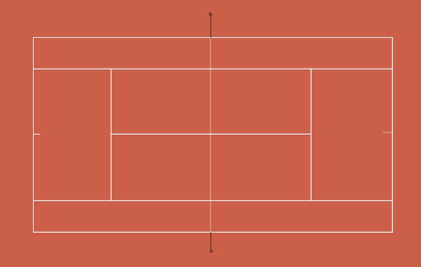

Tennis

Tennis ist ein Rückschlagspiel, bei dem der Spielball von den Spielern mit speziellen Schlägern wechselseitig über ein Netz in die gegnerische
Spielfeldhälfte geschlagen wird. Dieser ursprünglich als eher elitär geltende Sport hat sich mit fortschreitender Zeit zum beliebten Breitensport entwickelt.
Spielfeld

Das Spielfeld ist rechteckig, 23,77 Meter lang und 8,23 Meter breit für Einzel bzw. 10,97 Meter für Doppel, mit einem Netz in der Mitte, das die beiden Hälften trennt.
Spielregeln
- Ein Match besteht aus Sätzen, die wiederum aus Spielen bestehen. Meistens gewinnt der Spieler oder das Team, das zuerst zwei oder drei Sätze gewinnt.
- Ein Spiel beginnt mit einem Aufschlag vom rechten Feld in das diagonal gegenüberliegende Feld des Gegners.
- Der Ball darf nur einmal aufkommen, bevor er zurückgeschlagen wird.
- Ein Punkt wird erzielt, wenn der Gegner den Ball nicht regelgerecht zurückspielt oder ins Aus schlägt.
- Die Punkte innerhalb eines Spiels zählen: 0 (Love), 15, 30, 40, und dann Spiel. Bei 40:40 (Einstand) muss ein Spieler zwei Punkte in Folge gewinnen.
- Der Ball darf das Netz beim Aufschlag berühren, solange er im richtigen Feld landet (Let-Aufschlag, der wiederholt wird).
- Der Spieler wechselt nach jedem Spiel die Seite des Spielfelds.